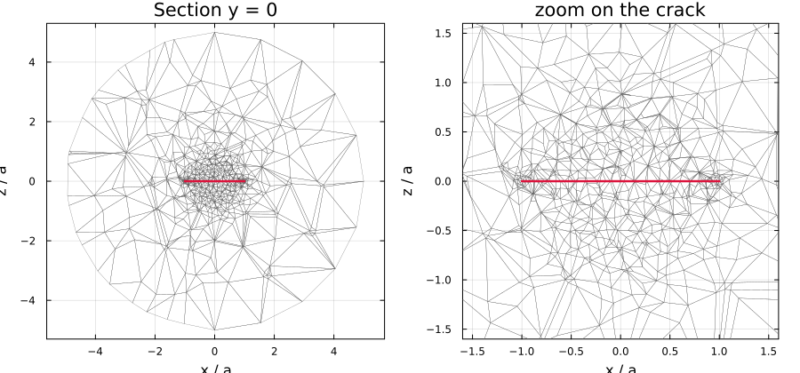
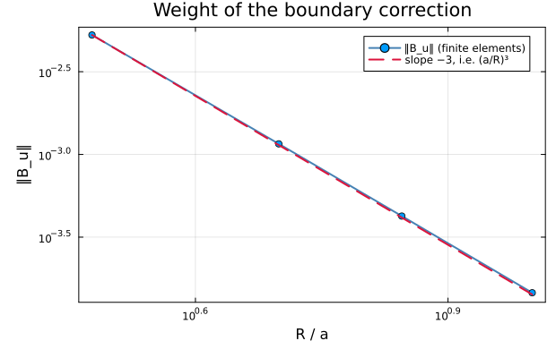
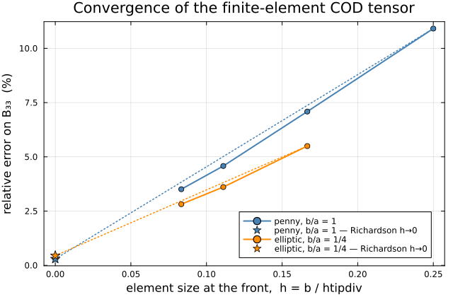

Finite-element inclusions
When a morphology has no closed-form Eshelby solution, its response can be computed numerically and fed to the schemes through the custom-inclusion contract. MeanFieldHom ships one such inclusion: FEEllipticCrack, whose crack-opening-displacement tensor comes out of a Ferrite.jl solve.
using MeanFieldHom
import Ferrite, FerriteGmsh, Gmsh # activates MeanFieldHomFerriteExtWithout those three packages the type still exists but every solve raises an informative error.
Nothing here is computed at documentation-build time. The figures and the numbers are produced once by scripts/fe/make_doc_figures.jl and committed; the live demonstrations are scripts/81_fe_crack_eshelby.jl and scripts/82_fe_crack_schemes.jl.
The finite-size bias
We want the response of an infinite medium, but we can only mesh a finite ball $\Omega$ of radius $R$. The obvious boundary condition is the remote field itself,
\[\mathbf u\big|_{\partial\Omega} = \mathbf E\cdot\mathbf x , \qquad \mathbf E = \mathbb S_0 : \boldsymbol\Sigma ,\]
but it clamps the perturbation radiated by the crack: the boundary is not allowed to move the way the infinite medium would let it. The apparent opening therefore carries a bias of order $O\bigl((a/R)^3\bigr)$, which is why an uncorrected computation needs R/a between 10 and 40 before it can be trusted.
The crack radiates as an elastic dipole
A displacement discontinuity $[\![\mathbf u]\!]$ across a surface $S$ of normal $\hat{\mathbf n}$ is mechanically equivalent to a distribution of force dipoles of density $\mathbb C_0 : (\hat{\mathbf n} \stackrel{s}{\otimes} [\![\mathbf u]\!])$. Seen from far away the whole crack is therefore a single point dipole of intensity
\[\boldsymbol\Pi = \int_S \mathbb C_0 : \bigl(\hat{\mathbf n}\stackrel{s}{\otimes}[\![\mathbf u]\!]\bigr)\,\mathrm dS = b\,S_f\; \mathbb C_0 : \bigl(\hat{\mathbf n}\stackrel{s}{\otimes}\mathbf U\bigr), \qquad \mathbf U = \frac{\langle[\![\mathbf u]\!]\rangle}{b}, \quad S_f = \pi a b ,\]
with $b$ the semi-minor axis — the normalization cod_tensor uses. The field it generates is that dipole contracted with the gradient of the Green function, so the correct far field is
\[\mathbf u(\mathbf x)\;\underset{\|\mathbf x\|\to\infty}{\approx}\; \mathbf E\cdot\mathbf x \;-\; b\,S_f\,\bigl(\nabla\mathbb G(\mathbf x):\mathbb C_0\cdot\hat{\mathbf n}\bigr)\cdot\mathbf U .\]
The idea of Adessina et al. (2017) is to put that second term into the boundary data.
Closing the loop: a 3 + 3 self-consistent scheme
The dipole intensity $\mathbf U$ is itself unknown — it is what we are trying to compute. Linearity resolves the circularity. Writing $\langle[\![\mathbf u]\!]\rangle/b = \mathbf B\cdot\mathbf t$ with $\mathbf t = \boldsymbol\Sigma\cdot\hat{\mathbf n}$, solve two families of three problems on the same mesh:
| Family | Boundary condition | Yields |
|---|---|---|
| traction, $\boldsymbol\Sigma^{(i)}\cdot\hat{\mathbf n} = \mathbf e_i$ | $\mathbf u\big|_{\partial\Omega} = (\mathbb S_0:\boldsymbol\Sigma^{(i)})\cdot\mathbf x$ | columns of $\mathbf B_s$ |
| dipole, unit intensity $\mathbf e_m$ | $\mathbf u\big|_{\partial\Omega} = -b\,S_f\bigl(\nabla\mathbb G:\mathbb C_0\cdot\hat{\mathbf n}\bigr)\cdot\mathbf e_m$ | columns of $\mathbf B_u$ |
$\mathbf B_s$ is the COD tensor of the truncated cell; $\mathbf B_u$ is its response to the crack's own far field. Superposing,
\[\mathbf U = \mathbf B_s\cdot\mathbf t + \mathbf B_u\cdot\mathbf U \qquad\Longrightarrow\qquad \mathbf U = (\mathbf 1 - \mathbf B_u)^{-1}\,\mathbf B_s\cdot\mathbf t ,\]
so the infinite-medium COD tensor follows in one step — no iteration:
\[\boxed{\;\mathbf B_\infty = (\mathbf 1 - \mathbf B_u)^{-1}\cdot\mathbf B_s\;}\]
The Green-function gradient
For an isotropic matrix $\nabla\mathbb G$ is the Kelvin solution in closed form. With $r = \|\mathbf x\|$, $\hat{\mathbf n} = \mathbf x/r$ and $A = 1/\bigl(16\pi\mu(1-\nu)\bigr)$,
\[G_{ij}(\mathbf x) = \frac{A}{r}\bigl[(3-4\nu)\,\delta_{ij} + n_i n_j\bigr], \qquad \frac{\partial G_{ij}}{\partial x_k} = \frac{A}{r^{2}}\bigl[-(3-4\nu)\,\delta_{ij}n_k + \delta_{ik}n_j + \delta_{jk}n_i - 3\,n_i n_j n_k\bigr],\]
and the contraction with a symmetric $\boldsymbol\Pi$ collapses to a single matrix-vector product,
\[u_i = \frac{\partial G_{ij}}{\partial x_k}\Pi_{jk} = \frac{1}{16\pi\mu(1-\nu)r^{2}} \Bigl[-2(1-2\nu)\,\boldsymbol\Pi\!\cdot\!\hat{\mathbf n} + \operatorname{tr}(\boldsymbol\Pi)\,\hat{\mathbf n} - 3\,(\hat{\mathbf n}\!\cdot\!\boldsymbol\Pi\!\cdot\!\hat{\mathbf n})\,\hat{\mathbf n}\Bigr]_i .\]
That is green_gradient_iso and dipole_displacement_iso, and it is why the matrix must currently be isotropic. For arbitrary anisotropy $\nabla\mathbb G$ would come from the Willis angular integral, or from the Pan–Chou closed form in the transversely isotropic case — neither is implemented here.
What is solved
Pure linear elasticity, $\int_\Omega \boldsymbol\sigma(\mathbf u): \boldsymbol\varepsilon(\mathbf v)\,\mathrm d\Omega = 0$, no body force. The crack is a zero-thickness discontinuity — duplicated nodes — whose lips are traction-free naturally: no interface term, no multiplier, no contact condition. Only the outer sphere carries a Dirichlet condition, and its value is the whole method.
Per evaluation: one assembly and one Cholesky factorization of the free-free block, reused for all six right-hand sides. The mean opening is then measured as a surface integral of the jump over each lip, with no assumption on the opening profile:
\[\mathbf U = \frac{1}{S_f\,b}\left(\int_{\Gamma^+}\mathbf u\,\mathrm dS - \int_{\Gamma^-}\mathbf u\,\mathrm dS\right).\]
The mesh
A ball of matrix around an elliptical slit, refined in a torus hugging the crack front — where the displacement field has its square-root singularity — and coarsening to $R/3$ on the outer boundary.

Left: the elliptical crack (red) suspended in the ball of matrix, whose far hemisphere is drawn in light blue — the crack is deliberately small, since $R = 5a$. Right: a zoom, with the $y = 0$ cut face behind the crack exposing how the tetrahedra grade from $h = b/12$ at the front out to the coarse far field.

The upper lip seen from $+z$, with the exact ellipse in red. Elements shrink towards the front.

Two details are worth stating, because both cost real debugging time in the SifAniso study this is ported from:
- the crack disc is
embeded in the ball, neverfragmented —fragmentwould cut the ball into two disjoint half-balls; - gmsh's
Crackplugin duplicates the nodes of the crack front as well as those of the lips, in spite ofOpenBoundaryPhysicalGroup(still true in gmsh 4.15). Left alone the crack is effectively half an element larger than requested and the opening is overestimated by 10–20 %. The front is therefore welded back together after import, which is also why the tetrahedra stay geometrically straight:setOrder(2)runs after the plugin and curves the two lips' front edges differently, pulling the welded front apart again at the mid-side nodes.
Straight tetrahedra with a P2 displacement field, then — subparametric, and capped at P2 because Ferrite provides no cubic Lagrange element on tetrahedra.
Using it
crack = FEEllipticCrack(1.0, 0.25; htipdiv = 12.0)
C₀ = iso_stiffness(0.8333, 0.3846) # E = 1, ν = 0.3
B_fe = cod_tensor(crack, C₀)
B_an = cod_tensor(EllipticCrack(1.0, 0.25), C₀) # closed form, for comparison
rve = RVE(:M)
add_matrix!(rve, Ellipsoid(1.0), Dict(:C => C₀))
add_phase!(rve, :cracks, crack, Dict(:C => C₀); density = 0.05,
symmetrize = IsoSymmetrize())
homogenize(rve, MoriTanaka(), :C)That is the point of the contract: only cod_tensor is implemented, and because the type subtypes AbstractCrack with a standard shape_trait, ℍ, ℕ, 𝐑, 𝐍K, the bundled pair and the four `delta*with their Budiansky4\pi/3` prefactor all follow. Orientation averaging is applied by the scheme afterwards.
Discretization
FEMeshOptions — passed as keywords to the constructor:
| Keyword | Default | Meaning |
|---|---|---|
radius_ratio | 5.0 | R/a. Five is enough because the boundary condition is corrected. |
htipdiv | 12.0 | element size at the crack front, b/htipdiv. |
order | 2 | displacement interpolation order (1 or 2). |
Diagnostics
fe_mesh_report(crack) # cells, dofs, welded front pairs, lip areas vs πab
fe_cod_breakdown(crack, C₀) # B_s, B_u, B_inf — bypasses the cache
fe_assembly_count(crack) # factorizations actually performed
fe_reset!(crack) # drop the mesh and the memoized tensorsValidation
The correction is the $(a/R)^3$ dipole
$\|\mathbf B_u\|$ measures the truncation bias being removed. If the boundary term really is the elastic dipole, it must fall like the cube of the domain radius — and it does, over a decade:

| R/a | ‖B_u‖ |
|---|---|
| 3 | 5.273e-03 |
| 5 | 1.159e-03 |
| 7 | 4.240e-04 |
| 10 | 1.458e-04 |
Fitted log-log slope: −2.98 against a theoretical −3. This is the sharpest available check that the dipole boundary condition has the right magnitude and the right sign — a sign error would not merely change the exponent, it would send $\mathbf B_\infty$ the wrong way.
Note how small the correction is at R = 5a (≈ 0.1 % on B). That is the whole point: it is what makes so small a domain legitimate, at the cost of three extra solves that share the existing factorization.
Convergence to the closed form
The crack front carries a square-root displacement field, so a fixed-order element converges slowly — in practice first order in the element size $h \propto 1/\texttt{htipdiv}$. That regularity is what makes Richardson extrapolation to $h\to 0$ legitimate, and it turns a few-percent raw error into a sub-percent verdict.

Isotropic matrix, $E = 1$, $\nu = 0.3$, radius_ratio = 5.
Penny-shaped crack (b/a = 1), closed form diag(B) = [1.81749, 1.81749, 1.54486]:
| h at the front | dofs | diag(B) | relative error (%) |
|---|---|---|---|
| b/4 | 14 865 | [1.55789, 1.56444, 1.37630] | [−14.28, −13.92, −10.91] |
| b/6 | 21 954 | [1.65089, 1.65308, 1.43537] | [−9.17, −9.05, −7.09] |
| b/9 | 43 515 | [1.70740, 1.70724, 1.47413] | [−6.06, −6.07, −4.58] |
| b/12 | 86 784 | [1.73522, 1.73483, 1.49067] | [−4.53, −4.55, −3.51] |
| h → 0 (Richardson) | — | [1.81867, 1.81760, 1.54029] | [+0.06, +0.01, −0.30] |
Elliptical crack (b/a = 1/4), closed form diag(B) = [3.09055, 2.33845, 2.26304]:
| h at the front | dofs | diag(B) | relative error (%) |
|---|---|---|---|
| b/6 | 61 941 | [2.91496, 2.14285, 2.13865] | [−5.68, −8.36, −5.50] |
| b/9 | 117 516 | [2.97504, 2.21003, 2.18140] | [−3.74, −5.49, −3.61] |
| b/12 | 220 176 | [2.99958, 2.23898, 2.19927] | [−2.94, −4.25, −2.82] |
| h → 0 (Richardson) | — | [3.07321, 2.32582, 2.25291] | [−0.56, −0.54, −0.45] |
The raw finite-element opening sits a few percent below the closed form, and for two compounding reasons that both push the same way: a truncated cell is stiffer than an infinite medium, and a fixed-order element under-resolves the front. The extrapolated values land within a percent — the residual is discretization, not a modelling error.
For reference, the FEniCSx implementation of the same scheme in the SifAniso study reports ±5 % on $\mathbf B_\infty$ at htipdiv = 12 with P3 elements.
Cost and memoization
One evaluation is one assembly, one factorization and six solves. Results are memoized on the reference medium expressed in the crack's own frame, which has a useful consequence: a whole family of orientations of the same crack in the same isotropic matrix shares a single finite-element resolution.
One-shot schemes (Dilute, MoriTanaka, Maxwell, PonteCastanedaWillis) therefore cost exactly one solve — including under IsoSymmetrize over an orientation distribution. Iterative schemes (SelfConsistent, DifferentialScheme) change the reference medium at every step and pay one solve per distinct C₀: usable, but expensive (8 assemblies for a typical self-consistent run).
An iterative scheme re-evaluates the crack in the current estimate. For a family of parallel cracks that estimate is transversely isotropic, and the isotropic-only boundary correction refuses it — with an error saying so, rather than silently substituting an isotropic projection. Adding symmetrize = IsoSymmetrize() to the phase makes the scheme hand the kernel an isotropic reference at every iteration.
Isotropy is tested on the tensor's content, not its TensND type, so an iterate arriving as a TensCanonical with isotropic content is accepted.
Limitations
- Isotropic matrix only — the corrected boundary condition uses the closed-form Kelvin dipole. An anisotropic
C₀raises anArgumentError. - Elasticity only — the transport problem would need its own finite-element resolution.
- No automatic differentiation through the solve: the sparse factorization is
Float64-only. Use finite differences for sensitivities. - P2 maximum on tetrahedra (Ferrite provides no cubic Lagrange element there).
These, along with the general 6 + 6 scheme for solid inclusions (the excentered-core sphere of the 2017 paper) and Fourier axisymmetric elements, are tracked in docs/src/developer/roadmap.md.
Reproducing this page
julia scripts/fe/make_doc_figures.jl # figures + docs/src/assets/fe/results.md
julia scripts/81_fe_crack_eshelby.jl # the validation, live
julia scripts/82_fe_crack_schemes.jl # the crack inside the schemesSee also
- A recycled-concrete aggregate — the same correction on a solid inclusion, in its general polarization-fixed-point form, on a two-dimensional axisymmetric Fourier mesh.
- Custom inclusions — the contract this implements.
- Adding a new inclusion — the full developer contract.